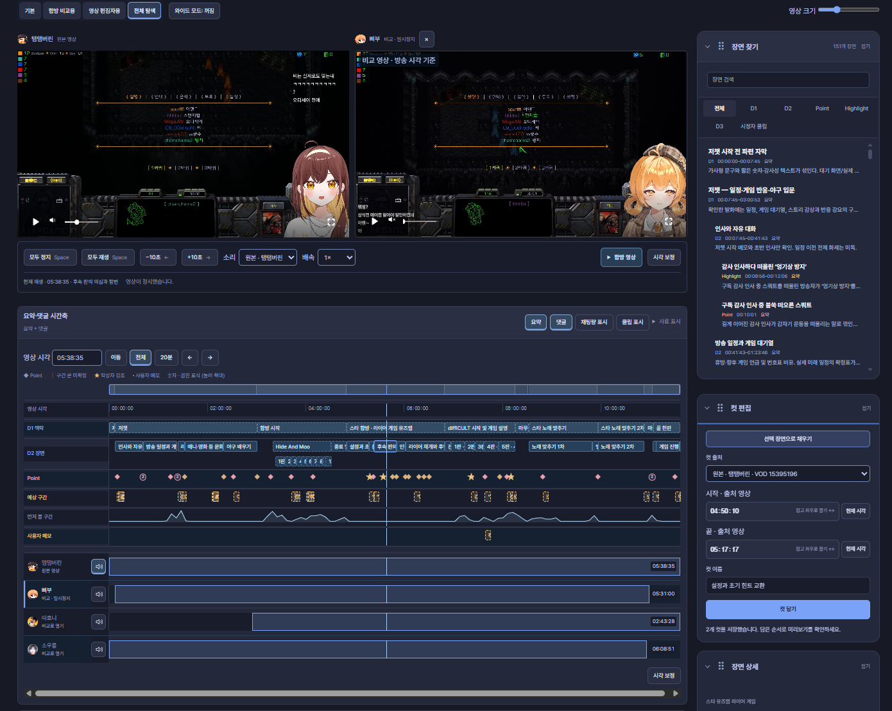

댓글에서 장면까지
다시보기 댓글에 적힌 시각을 읽고, 확인하고, 시간축에 담는 방법을 안내합니다. 기존 댓글은 그대로 가져올 수 있고, 새 댓글은 간단한 시각 목록으로 시작할 수 있습니다.
TEXT
00:00 방송 시작
02:35 오늘 할 게임 이야기
08:12 다시 보고 싶은 순간한 줄은 하나의 이동 지점입니다. 02:35는 영상이 시작한 뒤 2분 35초입니다. 방송 날짜나 실제 시계의 시각이 아닙니다.
가장 짧은 사용 순서
- 작업실에서 시간표 댓글을 선택하거나 평문·지원 파일을 가져옵니다.
- 미리보기에서 시각, 주제·장면·순간, 원문과 확인 안내를 살펴봅니다.
- 확인한 자료를 시간축에 불러오기로 채택합니다.
파일 선택이나 미리보기만으로 기존 자료를 덮어쓰지 않습니다.
시간축에서는 이렇게 보입니다
아래는 실제 CVA-탬패드 편집 화면입니다. 위에서 영상을 비교하고, 아래의 같은 시간축에서 댓글로 불러온 주제·장면·순간을 살펴봅니다.

- D1 맥락 · D2 장면: 큰 주제와 그 안의 장면을 구간 막대로 보여줍니다.
- Point: 다시 보고 싶은 순간을 표식으로 보여줍니다. 별은 작성자가 강조한 지점입니다.
- 같은 세로선: 각 행과 영상에서 현재 보고 있는 시점을 함께 확인합니다.
- 자료 표시: 필요한 행을 골라 봅니다. 채팅량·시청자 클립은 해당 자료를 불러왔을 때 확인할 수 있습니다.
화면은 실제 사용 예시이며, 표시되는 행과 장면은 불러온 자료에 따라 달라집니다. 댓글을 가져온 뒤에는 원문과 해석 미리보기를 먼저 확인하세요.
D1·D2·Dn, Point와 예상 구간의 뜻은 별도 목차인 시간축 용어에서 확인하세요. 각 댓글 예제에는 입력을 해석한 시간축 그림을 함께 넣었습니다.
무엇부터 읽을까요?
- 공개 요약이나 로컬 파일을 쓴다면: 요약과 JSON 가져오기에서 자료 종류와 적용 순서를 확인하세요. 호환 시간축 JSON·TXT는 ttaem.com에 게시하지 않고 가져올 수 있습니다.
- D1·D2·Point가 낯설다면: 시간축 용어에서 뜻과 화면의 행을 확인하세요.
- 처음 작성한다면: 지원 형태 한눈에에서 짧은 예제를 골라 쓰세요.
- 이미 작성된 댓글이라면: 기존 댓글 읽기에서 들여쓰기·목차·분리된 목록을 확인하세요.
- 시작과 끝을 지정한다면: 구간과 강조에서 순간과 범위를 구별하세요.
- 다른 시점을 찾는다면: 인물과 합방에서 이름 단서와 확인된 참여를 구별하세요.
이 안내의 범위
댓글 읽기와 시간표 가져오기를 설명하는 문서입니다. 모든 자연어를 자동으로 이해하지는 않습니다. 지원 형태 · 문제 해결
화면과 댓글 예제를 함께 보며 확인할 수 있습니다. 작성 기준